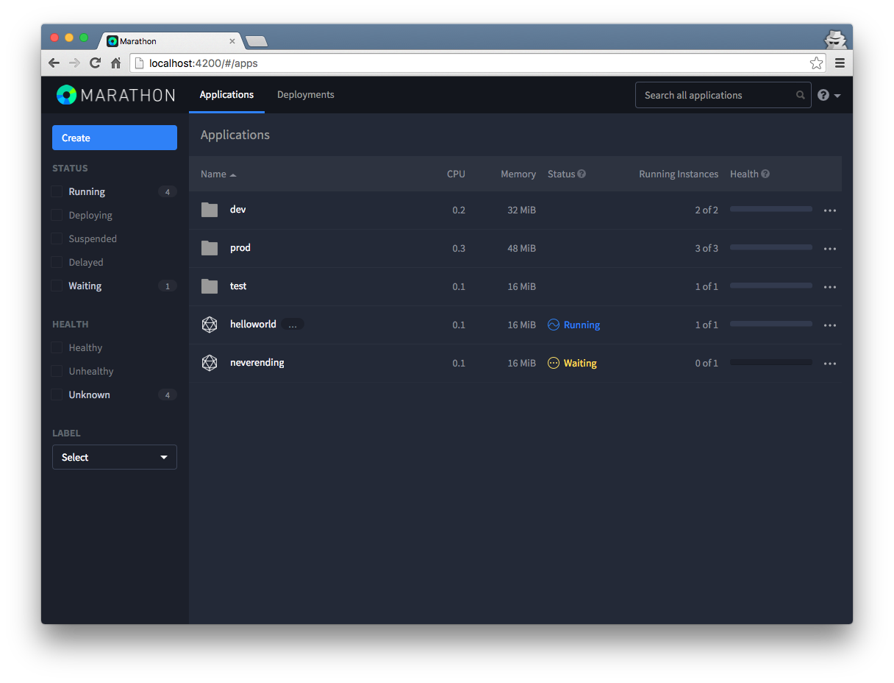

Build your own Mesos Framework
Agenda
- What and Why
- Structure of Mesos Framework
- Existing Schedulers
- Implementing Scheduler
- Implementing Executor
Program against your datacenter like it’s a single pool of resources
What is Mesos?
- Abstract CPU, Memory, Ports, etc.
- Linux kernel for cluster
- Scalability to 10,000s of nodes
- Fault-tolerant (using ZooKeeper)
- Support for Docker
- Web UI
- http://mesos.berkeley.edu/mesos_tech_report.pdf
Masters and Slaves
Masters and Slaves

Resource Offers
- CPU
- Memory
- Ports
Structure of Mesos Framework
-
Scheduler
- Receive Offers
- Accept or Decline Offer
- Launch tasks
-
Executor
- Counting words
- Generating logs
Existing Schedulers
- Marathon
https://mesosphere.github.io/marathon/ - Aurora
http://aurora.apache.org/
Marathon
Implementing Scheduler
go get github.com/mesos/mesos-go
Scheduler Driver
type SchedulerDriver interface {
Start()
...
AcceptOffers(offerIDs []*mesos.OfferID, ...)
...
LaunchTasks(offerIDs []*mesos.OfferID, tasks []*mesos.TaskInfo, ...)
...
DeclineOffer(offerID *mesos.OfferID, ...)
...
}
Scheduler
type Scheduler interface {
Registered(SchedulerDriver, *mesos.FrameworkID, *mesos.MasterInfo)
...
ResourceOffers(SchedulerDriver, []*mesos.Offer)
...
StatusUpdate(SchedulerDriver, *mesos.TaskStatus)
...
}
Typical Algorithm
ResourceOffers
if !shed.haveTasksToLaunch() {
driver.DeclineOffer(...)
}
for _, offer := range offers {
task := &mesos.TaskInfo{
Name: proto.String("go-task-" + taskId.GetValue()),
SlaveId: offer.SlaveId,
Executor: sched.executor,
Resources: []*mesos.Resource{
util.NewScalarResource("cpus", CPUS_PER_TASK),
util.NewScalarResource("mem", MEM_PER_TASK),
},
}
}
driver.LaunchTasks([]*mesos.OfferID{offer.Id}, tasks, &mesos.Filters{RefuseSeconds: proto.Float64(5)})
Implementing Executor
type Executor interface {
...
LaunchTask(ExecutorDriver, *mesosproto.TaskInfo)
...
}
LaunchTask
go countingWords()
driver.SendStatusUpdate(runStatus)
Examples
-
Official:
https://github.com/mesos/mesos-go/tree/master/examples/ -
Syslog:
https://github.com/elodina/syslog-service -
Go Kafka Client Scheduler:
https://github.com/elodina/go-kafka-client-mesos/ -
Executor:
https://github.com/elodina/stockpile
THE END
Questions?